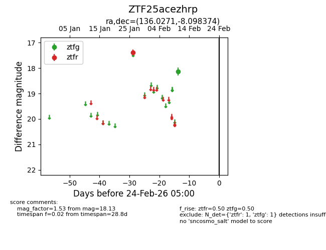
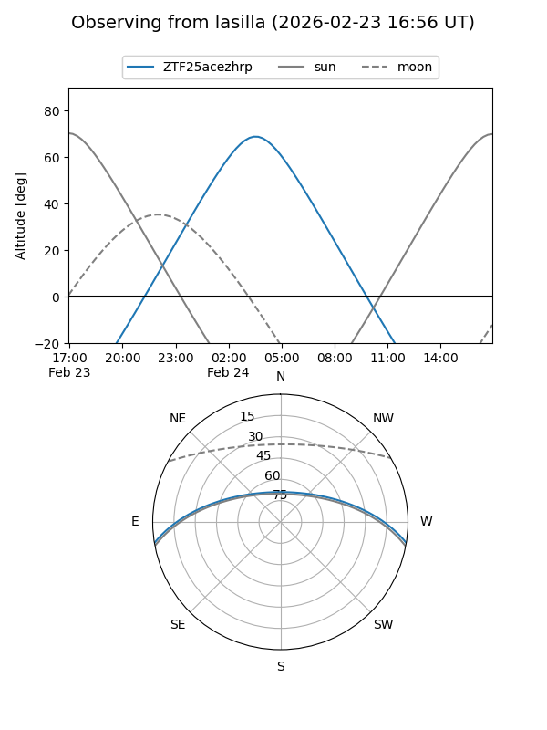
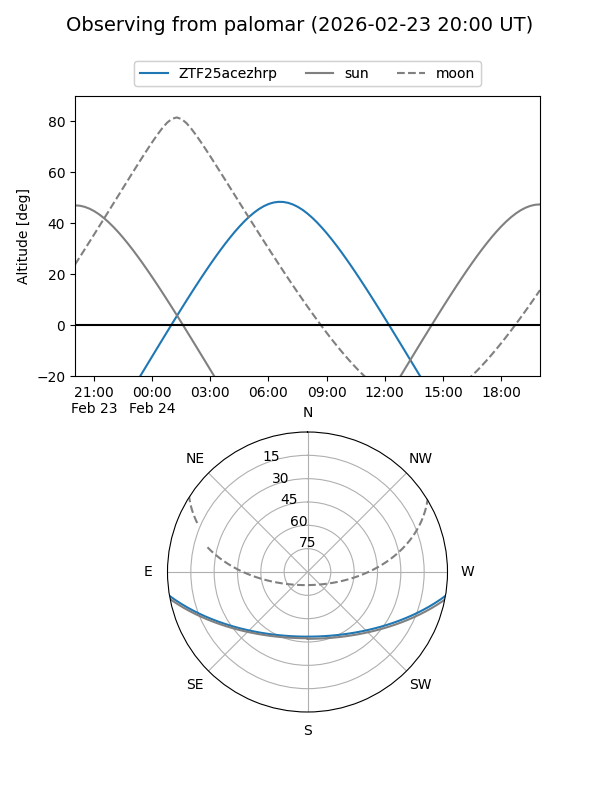

ZTF25acezhrp
Target ZTF25acezhrp at 2026-02-24 09:08
Aliases and brokers:
FINK: link
Lasair: link
ALeRCE: link
alt names
ZTF25acezhrp (ztf,fink_ztf)
Coordinates:
equatorial (ra, dec) = 136.0271,-8.09837
equatorial (HMS+DMS) = 09:04:06.51,-08:05:54.15
galactic (l, b) = (237.1266,+24.69656)
Flags:
Photometry:
last ztfg=18.13, ztfr=17.39
1 ztfg, 1 ztfr detections
Lightcurve

Visibility


Additional plots